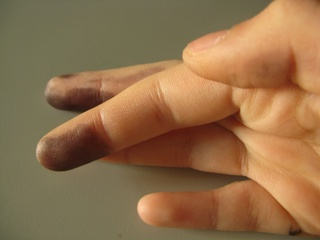

Pro Tip: cartuchos
Alguna vez les pasó que imprimen algo y les sale con espacios "no impresos"? esas tipicas lineas les digo. A veces se arregla con la limpieza de cabezales. Muchas veces se opta por cambiar el cartucho. Usualmente hago lo segundo pero esta vez no pude, no queria tirar cartucho medio-1/4 cartucho llenito.
Al principio habia optado por imprimir las hojas, tomar las lineas que estaban con la lineas feas esas, re imprimirlas... rinse and repeat. Cortar y pegar. Quedando algo asi (que sirve si es para listados y cosas no formales):
Pero por esas casualidades de la vida, en uno de los podcasts que escucho/veo, salió alguien diciendo que habia que ponerle calor al cartucho (donde sale la tinta/abajo) con una secadora de pelo (o algo que haga el mismo trabajo). Como tenia que volver a imprimir mi poster copado de kanji, me decidi a probar este método.
Primero lo puse sobre una estufa (ya que hace frío por estos lares y estaba en minimo-medio/no piloto). No se si tuvo efecto porque no tenia para comparar. Después hice eso de la secadora de pelo y dejenme decirles que... parece que funciona! (and it makes sense!).
Desde la izquierda: la primera es la normal/después de la estufa. La del medio es con la secadora de pelo. La última es otra vez con la secadora de pelo. Seguro que si lo hacia una tercera vez imprime de-lu-jo pero el cartucho se estaba por terminar (no lo valía) y explotó1:

(también en la mesa, pero a esa no le saqué foto, no vaya a pasar que se seque y sea un lio limpiarla. Menos mal que no lo hice sobre la alfombra)
Para hacer este truquito/cosas a tener en cuenta:
- secadora de pelo. La estufa como que mucho no me sirvió y me quemaba las manitos.
- mantener el flujo de aire caliente por 30 seg - 1 minuto. No mas de eso o puede explotar1 (como me pasó a mi). Si se requiere varias aplicaciones, "dejar" descansar el cartucho por unos minutos y volver a intentar.
- Hacerlo en una superficie que se limpie fácil/descartable por si chorrea tinta o estar atenti.
Comments
-
se chorreó tinta... bastante... ↩
Tu dedo chiquito comienza flaquito en la punta y se hace gordito en la base. ^.^
Tengo dedos rechonchos =P